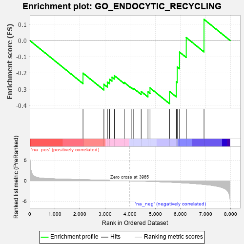
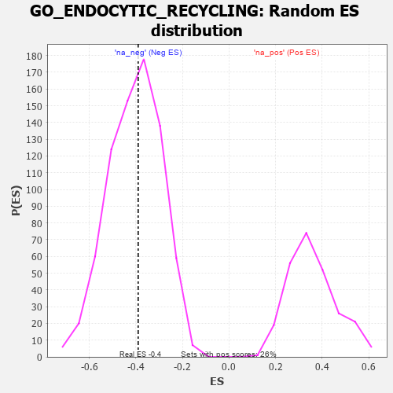

| | | Dataset | 7d |
| Phenotype | NoPhenotypeAvailable |
| Upregulated in class | na_neg |
| GeneSet | GO_ENDOCYTIC_RECYCLING |
| Enrichment Score (ES) | -0.38973045 |
| Normalized Enrichment Score (NES) | -0.9617844 |
| Nominal p-value | 0.5315436 |
| FDR q-value | 0.9060908 |
| FWER p-Value | 1.0 |
Table: GSEA Results Summary

Fig 1: Enrichment plot: GO_ENDOCYTIC_RECYCLING
Profile of the Running ES Score & Positions of GeneSet Members on the Rank Ordered List
| PROBE | GENE SYMBOL | GENE_TITLE | RANK IN GENE LIST | RANK METRIC SCORE | RUNNING ES | CORE ENRICHMENT | | 1 | SNF8 | | | 2119 | 0.288 | -0.2014 | No |
| 2 | RAB17 | | | 2950 | 0.157 | -0.2703 | No |
| 3 | STX6 | | | 3087 | 0.138 | -0.2563 | No |
| 4 | VPS50 | | | 3177 | 0.125 | -0.2392 | No |
| 5 | SNX17 | | | 3272 | 0.110 | -0.2262 | No |
| 6 | EPG5 | | | 3368 | 0.094 | -0.2171 | No |
| 7 | VPS52 | | | 3758 | 0.033 | -0.2586 | No |
| 8 | VPS53 | | | 4036 | -0.014 | -0.2903 | No |
| 9 | VPS51 | | | 4137 | -0.030 | -0.2961 | No |
| 10 | VPS29 | | | 4433 | -0.082 | -0.3147 | No |
| 11 | ARF6 | | | 4704 | -0.140 | -0.3172 | Yes |
| 12 | RAB14 | | | 4784 | -0.155 | -0.2923 | Yes |
| 13 | EHD1 | | | 5560 | -0.336 | -0.3141 | Yes |
| 14 | SNX4 | | | 5834 | -0.415 | -0.2549 | Yes |
| 15 | RAB13 | | | 5870 | -0.425 | -0.1636 | Yes |
| 16 | ACTN2 | | | 5960 | -0.458 | -0.0715 | Yes |
| 17 | EHD4 | | | 6227 | -0.545 | 0.0180 | Yes |
| 18 | SNX3 | | | 6934 | -0.893 | 0.1304 | Yes |
Table: GSEA details [plain text format]

Fig 2: GO_ENDOCYTIC_RECYCLING: Random ES distribution
Gene set null distribution of ES for GO_ENDOCYTIC_RECYCLING